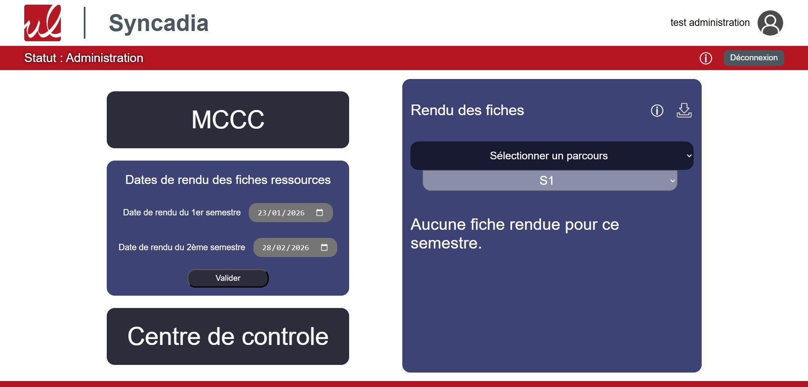
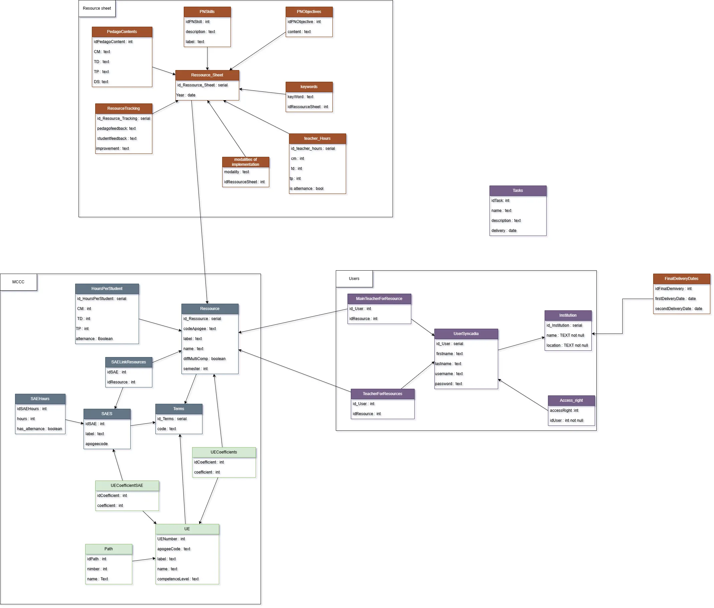

Projet ERP IUT SAE A2 :
Description :
Ce projet consiste à créer une application web, avec du Vue.js, API REST et du Java Spring Boot
dans une équipe de 6 personnes, pour la gestion de remplissage de fiche ressource et des MCCC (Les modalités de contrôle des connaissances et des compétences)
pour l'IUT de Limoges. Le but de notre application est de facilité le processus de remplissage de ces fiches.
Rôle personnel :
En tant que développeur full-stack, j'ai participé à la conception des MCD, du recueil des besoins,
des maquettes et des différents dashboard et formulaires.
Livrables :
Vous pouvez retrouver le code de l'application en cliquant ici.
Voici un des dashboard que j'ai réalisé :

Voici le diagramme des MCD :

Compétences démontrées :
- Conception d'architecture logicielle
- Utilisation de frameworks web (Vue.js, Spring Boot)
- Collaboration en équipe agile et avec git
Projet TodoList :
Description :
Projet solo de création d'une application mobile de todo list avec Kotlin JetPack compose et Room pour
la base de données locale.
Rôle personnel :
En tant que développeur solo, j'ai été responsable de la conception des maquettes, du MCD et du développement de l'application.
Livrables :
Vous pouvez retrouver le code de l'application en cliquant ici.
Voici mes maquettes :

Compétences démontrées :
- Conception d'interface utilisateur mobile
- Utilisation de JetPack compose pour le développement d'applications Android
- Gestion de données locales avec Room